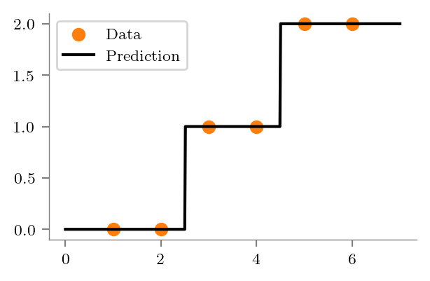
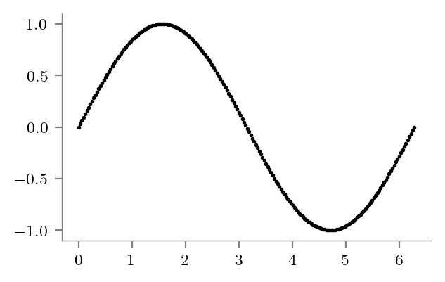
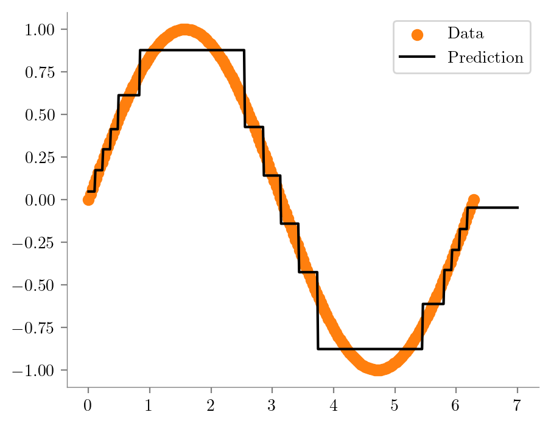
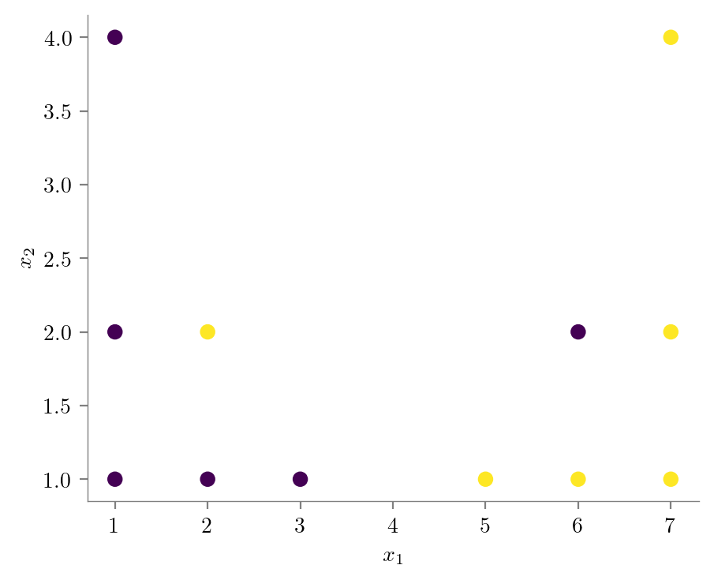
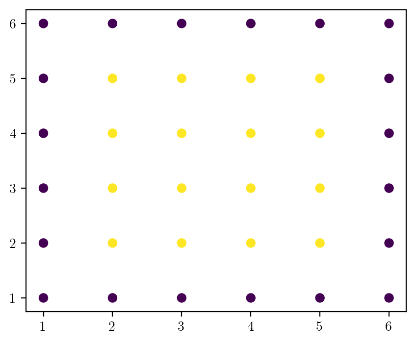
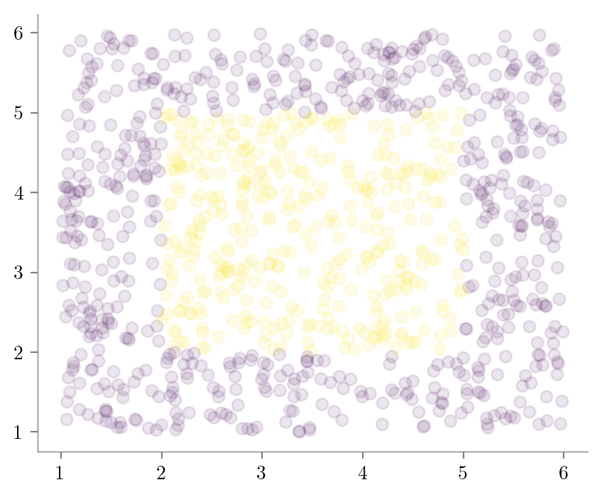
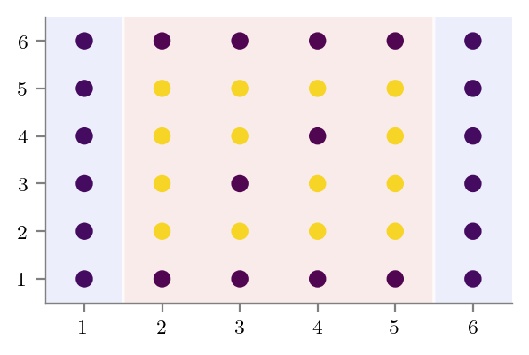
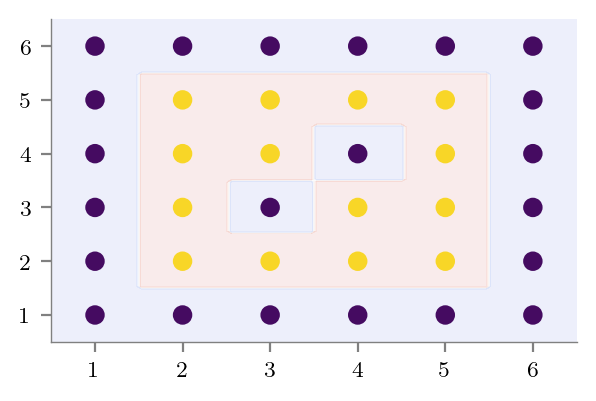

import numpy as np
import matplotlib.pyplot as plt
# Retina display
%config InlineBackend.figure_format = 'retina'
from latexify import latexify, format_axes# Create dataset
x = np.array([1, 2, 3, 4, 5, 6])
y = np.array([0, 0, 1, 1, 2, 2])
# plot data
latexify()
plt.scatter(x, y, color='k')
format_axes(plt.gca())
plt.savefig("../figures/decision-trees/ri-ro-dataset.pdf")
# Depth 0 tree
# Average of all y values
y_pred = np.mean(y)
# Plot data
latexify()
plt.scatter(x, y, color='C1', label='data')
# Plot prediction
plt.plot([0, 7], [y_pred, y_pred], color='k', linestyle='-', label='Prediction')
format_axes(plt.gca())
plt.legend()
plt.savefig("../figures/decision-trees/ri-ro-depth-0.pdf")
# Depth 1 tree# getting the same via sklearn
from sklearn.tree import DecisionTreeRegressor
dt = DecisionTreeRegressor(max_depth=1)
dt.fit(x.reshape(-1, 1), y)
y_pred = dt.predict(x.reshape(-1, 1))
# Plot data
latexify()
plt.scatter(x, y, color='C1', label='Data')
x_test = np.linspace(0, 7, 500)
y_test = dt.predict(x_test.reshape(-1, 1))
plt.plot(x_test, y_test, color='k', label='Prediction')
format_axes(plt.gca())
plt.legend()
plt.savefig("../figures/decision-trees/ri-ro-depth-1.pdf")
# Plot tree using sklearn export
from sklearn.tree import export_graphviz
import graphviz
dot_data = export_graphviz(dt, out_file=None, feature_names=['x'], filled=True)
graph = graphviz.Source(dot_data)
graph.format = 'pdf'
graph.render("../figures/decision-trees/ri-ro-depth-1-sklearn")'../figures/decision-trees/ri-ro-depth-1-sklearn.pdf'# Depth 2 tree
dt = DecisionTreeRegressor(max_depth=2)
dt.fit(x.reshape(-1, 1), y)
# Plot data
latexify()
plt.scatter(x, y, color='C1', label='Data')
# Plot decision boundary
x_test = np.linspace(0, 7, 500)
y_test = dt.predict(x_test.reshape(-1, 1))
plt.plot(x_test, y_test, color='k', label='Prediction')
format_axes(plt.gca())
plt.legend()
plt.savefig("../figures/decision-trees/ri-ro-depth-2.pdf")
# Plot dt
dot_data = export_graphviz(dt, out_file=None, feature_names=['x'], filled=True)
graph = graphviz.Source(dot_data)
graph.format = 'pdf'
graph.render("../figures/decision-trees/ri-ro-depth-2-sklearn")'../figures/decision-trees/ri-ro-depth-2-sklearn.pdf'### Sine daatset
x = np.linspace(0, 2*np.pi, 200)
y = np.sin(x)
# Plot data
latexify()
plt.scatter(x, y, color='k', s=1)
format_axes(plt.gca())
plt.savefig("../figures/decision-trees/sine-dataset.pdf")
dt = DecisionTreeRegressor(max_depth=1)
dt.fit(x.reshape(-1, 1), y)
dot_data = export_graphviz(dt, out_file=None, feature_names=['x'], filled=True)
graph = graphviz.Source(dot_data)
graph.format = 'pdf'
graph.render("../figures/decision-trees/sine-depth-1-sklearn")'../figures/decision-trees/sine-depth-1-sklearn.pdf'latexify()
plt.scatter(x, y, color='C1', label='Data')
# Plot decision boundary
x_test = np.linspace(0, 7, 500)
y_test = dt.predict(x_test.reshape(-1, 1))
plt.plot(x_test, y_test, color='k', label='Prediction')
format_axes(plt.gca())
plt.legend()
plt.savefig("../figures/decision-trees/sine-depth-1.pdf")
dt = DecisionTreeRegressor(max_depth=4)
plt.scatter(x, y, color='C1', label='Data',s=1)
dt.fit(x.reshape(-1, 1), y)
y_test = dt.predict(x_test.reshape(-1, 1))
plt.plot(x_test, y_test, color='k', label='Prediction')
format_axes(plt.gca())
plt.legend()
plt.savefig("../figures/decision-trees/sine-depth-4.pdf")
### Dataset for showing bias-variance tradeoff
# Create dataset
X = np.array([
[1, 1],
[2, 1],
[3, 1],
[5, 1],
[6, 1],
[7, 1],
[1, 2],
[2, 2],
[6, 2],
[7, 2],
[1, 4],
[7, 4]
])
y = np.array([0, 0, 0, 1, 1, 1, 0, 1, 0, 1 ,0, 1])
plt.scatter(X[:, 0], X[:, 1], c=y)
plt.xlabel("$x_1$")
plt.ylabel("$x_2$")
format_axes(plt.gca())
plt.savefig("../figures/decision-trees/bias-variance-dataset.pdf")
dt = DecisionTreeRegressor(max_depth=1)
dt.fit(X, y)
# Predict in entire 2d space and contour plot
x1 = np.linspace(0, 8, 100)
x2 = np.linspace(0, 5, 100)
X1, X2 = np.meshgrid(x1, x2)
X_test = np.stack([X1.flatten(), X2.flatten()], axis=1)
y_test = dt.predict(X_test)
plt.scatter(X[:, 0], X[:, 1], c=y)
plt.contourf(X1, X2, y_test.reshape(X1.shape), alpha=0.1, cmap='coolwarm')
format_axes(plt.gca())
plt.savefig("../figures/decision-trees/bias-variance-depth-1.pdf")
# Now, plot the dt via sklearn export
dot_data = export_graphviz(dt, out_file=None, feature_names=['x1', 'x2'], filled=True)
graph = graphviz.Source(dot_data)
graph.format = 'pdf'
graph.render("../figures/decision-trees/bias-variance-depth-1-sklearn")'../figures/decision-trees/bias-variance-depth-1-sklearn.pdf'# No depth limit
dt = DecisionTreeRegressor()
dt.fit(X, y)
# Predict in entire 2d space and contour plot
y_test = dt.predict(X_test)
plt.scatter(X[:, 0], X[:, 1], c=y)
plt.contourf(X1, X2, y_test.reshape(X1.shape), alpha=0.1, cmap='coolwarm')
format_axes(plt.gca())
plt.savefig("../figures/decision-trees/bias-variance-full-depth.pdf")
# export tree
dot_data = export_graphviz(dt, out_file=None, feature_names=['x1', 'x2'], filled=True)
graph = graphviz.Source(dot_data)
graph.format = 'pdf'
graph.render("../figures/decision-trees/bias-variance-full-depth-sklearn")'../figures/decision-trees/bias-variance-full-depth-sklearn.pdf'# Bias variance dataset 2
# X is all integers from (1, 1) to (6, 6)
X = np.array([[i, j] for i in range(1, 7) for j in range(1, 7)])y = np.zeros(len(X), dtype=int)
y[(2 <= X[:, 0]) & (X[:, 0] <= 5) & (2 <= X[:, 1]) & (X[:, 1] <= 5)] = 1plt.scatter(X[:, 0], X[:, 1], c=y)<matplotlib.collections.PathCollection at 0x14f504700>
special_condition = (X[:, 0] == 3) & (X[:, 1] == 3) | (X[:, 0] == 4) & (X[:, 1] == 4)
y[special_condition] = 0
plt.scatter(X[:, 0], X[:, 1], c=y)
format_axes(plt.gca())
plt.savefig("../figures/decision-trees/bias-variance-dataset-2.pdf")
# X_test random uniform frmo (1, 1) to (6, 6) of size 1000
X_test = np.random.uniform(1, 6, size=(1000, 2))
y_test = np.zeros(len(X_test), dtype=int)
y_test[(2 <= X_test[:, 0]) & (X_test[:, 0] <= 5) & (2 <= X_test[:, 1]) & (X_test[:, 1] <= 5)] = 1
plt.scatter(X_test[:, 0], X_test[:, 1], c=y_test, alpha=0.1)
format_axes(plt.gca())
plt.savefig("../figures/decision-trees/bias-variance-dataset-2-test.pdf")
# Underfitting
# Depth-1 tree
dt = DecisionTreeRegressor(max_depth=2)
dt.fit(X, y)
# Predict in entire 2d space and contour plot
x1 = np.linspace(0.5, 6.5, 100)
x2 = np.linspace(0.5, 6.5, 100)
# Contour plot
X1, X2 = np.meshgrid(x1, x2)
X_contour = np.stack([X1.flatten(), X2.flatten()], axis=1)
y_contour = dt.predict(X_contour)
plt.scatter(X[:, 0], X[:, 1], c=y)
plt.contourf(X1, X2, y_contour.reshape(X1.shape), alpha=0.1, cmap='coolwarm')
format_axes(plt.gca())
plt.savefig("../figures/decision-trees/bias-variance-depth-2.pdf")
# Export tree
dot_data = export_graphviz(dt, out_file=None, feature_names=['x1', 'x2'], filled=True)
graph = graphviz.Source(dot_data)
graph.format = 'pdf'
graph.render("../figures/decision-trees/bias-variance-depth-2-sklearn")'../figures/decision-trees/bias-variance-depth-2-sklearn.pdf'
# Overfitting
dt = DecisionTreeRegressor()
dt.fit(X, y)
# Predict in entire 2d space and contour plot
y_contour = dt.predict(X_contour)
plt.scatter(X[:, 0], X[:, 1], c=y)
plt.contourf(X1, X2, y_contour.reshape(X1.shape), alpha=0.1, cmap='coolwarm')
format_axes(plt.gca())
plt.savefig("../figures/decision-trees/bias-variance-full-depth.pdf")
# Export tree
dot_data = export_graphviz(dt, out_file=None, feature_names=['x1', 'x2'], filled=True)
graph = graphviz.Source(dot_data)
graph.format = 'pdf'
graph.render("../figures/decision-trees/bias-variance-full-depth-sklearn")'../figures/decision-trees/bias-variance-full-depth-sklearn.pdf'